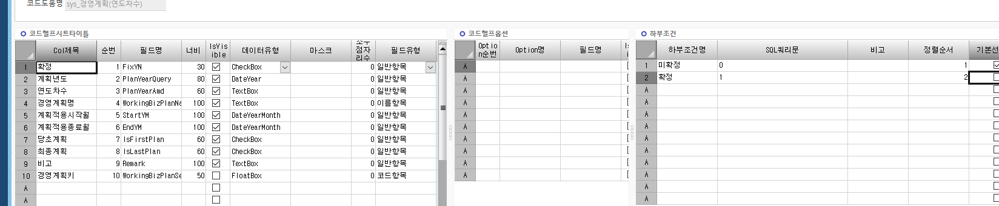

코드도움 주의사항, 코드도움 추가 조건
DROP PROCEDURE dbo.sys_SWCACodeHelpBasePlan
GO
CREATE PROCEDURE dbo.sys_SWCACodeHelpBasePlan
@WorkingTag varchar(1),
@LanguageSeq INT,
@CodeHelpSeq INT,
@DefQueryOption INT,
@CodeHelpType INT,
@PageCount INT = 20,
@CompanySeq INT = 1,
@Keyword nvarchar(100)='',
@Param1 nvarchar(50)='',
@Param2 nvarchar(50)='',
@Param3 nvarchar(50)='',
@Param4 nvarchar(50)='',
@ConditionSeq nvarchar(200)=''
AS
--EXEC _SYMMETRICKeyOpen
SET ROWCOUNT @PageCount
SELECT ISNULL(A.FixYN ,'') AS FixYN , -- 확정
ISNULL(A.PlanYear ,'') AS PlanYearQuery , -- 계획년도
ISNULL(A.PlanYearAmd ,'') AS PlanYearAmd, -- 연도차수
ISNULL(A.BizPlanSeq ,'') AS WorkingBizPlanSeq , -- 경영계획키
ISNULL(A.BizPlanName ,'') AS WorkingBizPlanName, -- 경영계획명
ISNULL(A.StartYM ,'') AS StartYM , -- 계획적용시작월
ISNULL(A.EndYM ,'') AS EndYM , -- 계획적용종료월
ISNULL(A.IsFirstPlan ,'') AS IsFirstPlan, -- 당초계획
ISNULL(A.IsLastPlan ,'') AS IsLastPlan , -- 최종계획
ISNULL(A.Remark ,'') AS Remark -- 비고
FROM SYS_TBPYearAmd AS A WITH(NOLOCK)
WHERE A.CompanySeq = @CompanySeq
AND (@ConditionSeq = '' OR
(@ConditionSeq = '0' AND ISNULL(A.FixYN, '') \<> '1') OR
(@ConditionSeq = '1' AND ISNULL(A.FixYN, '') = '1')
)
AND A.BizPlanName LIKE @Keyword + N'%'
SET ROWCOUNT 0
RETURN
-- ISNULL(A.FixYN, '') \<> '1'
-- ISNULL(A.FixYN, '') = '1'
